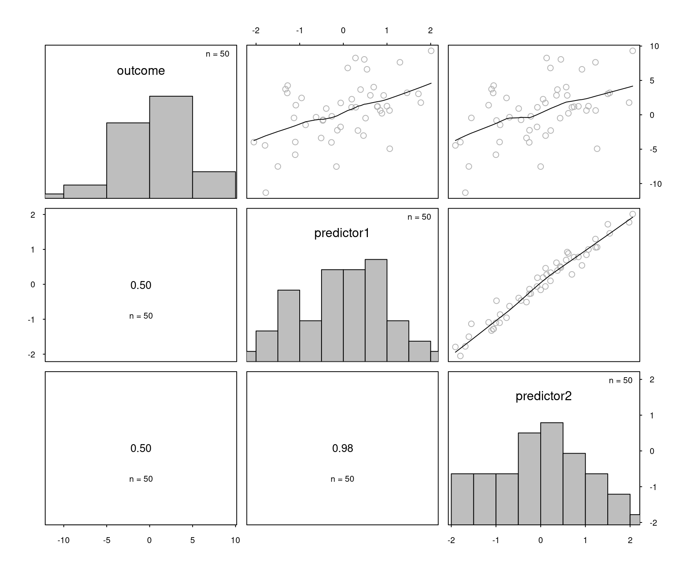
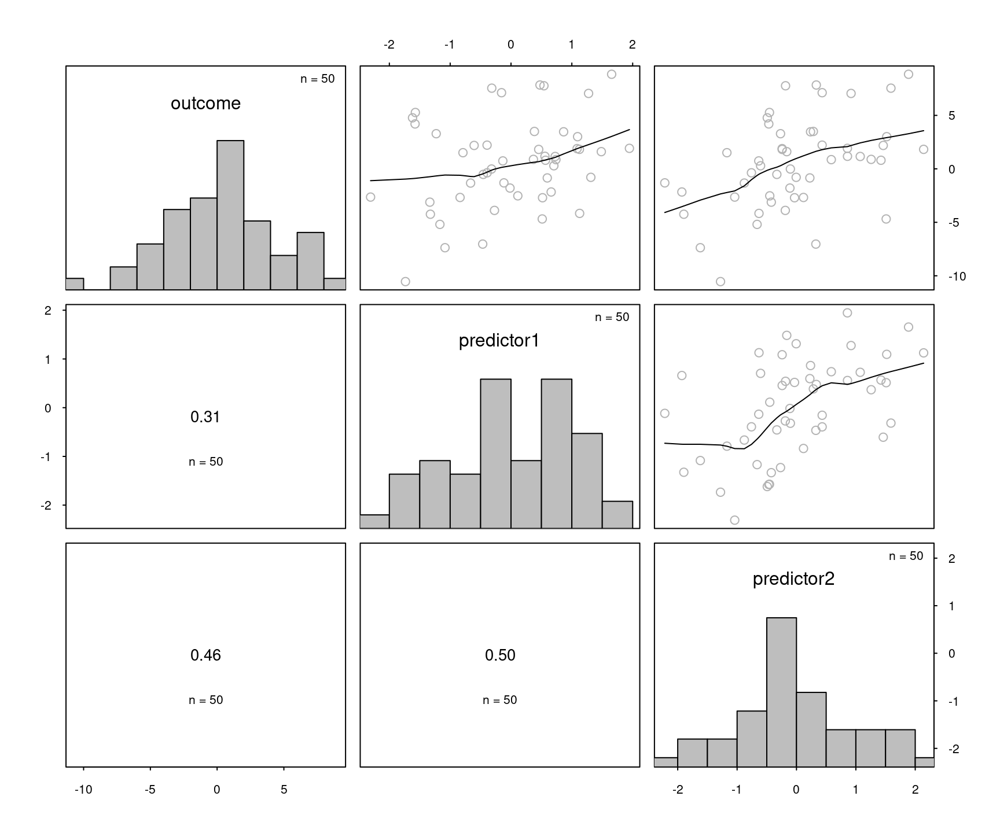
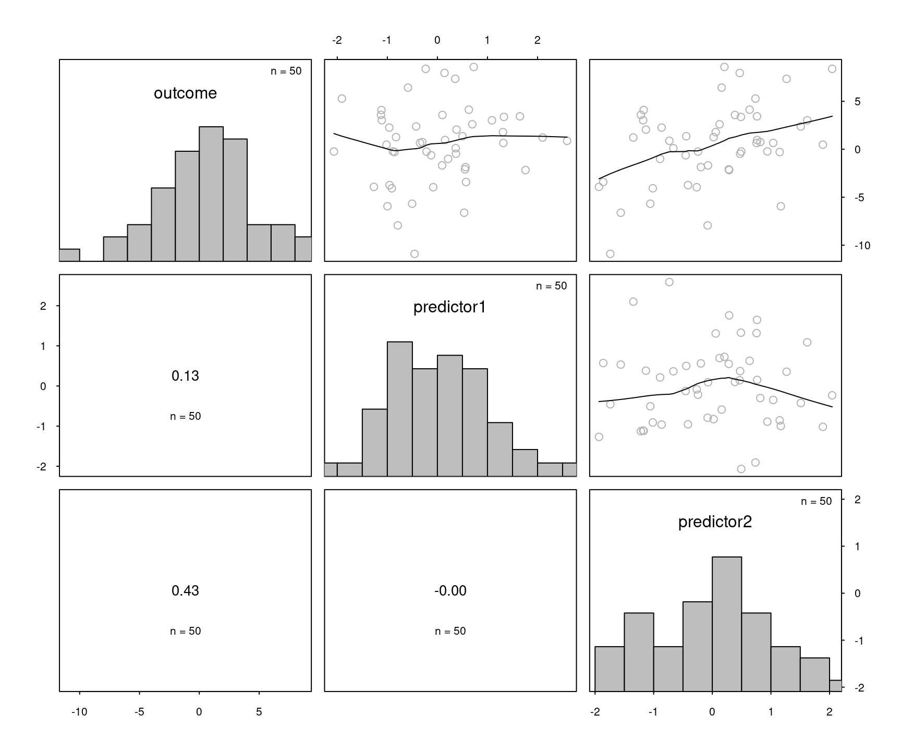
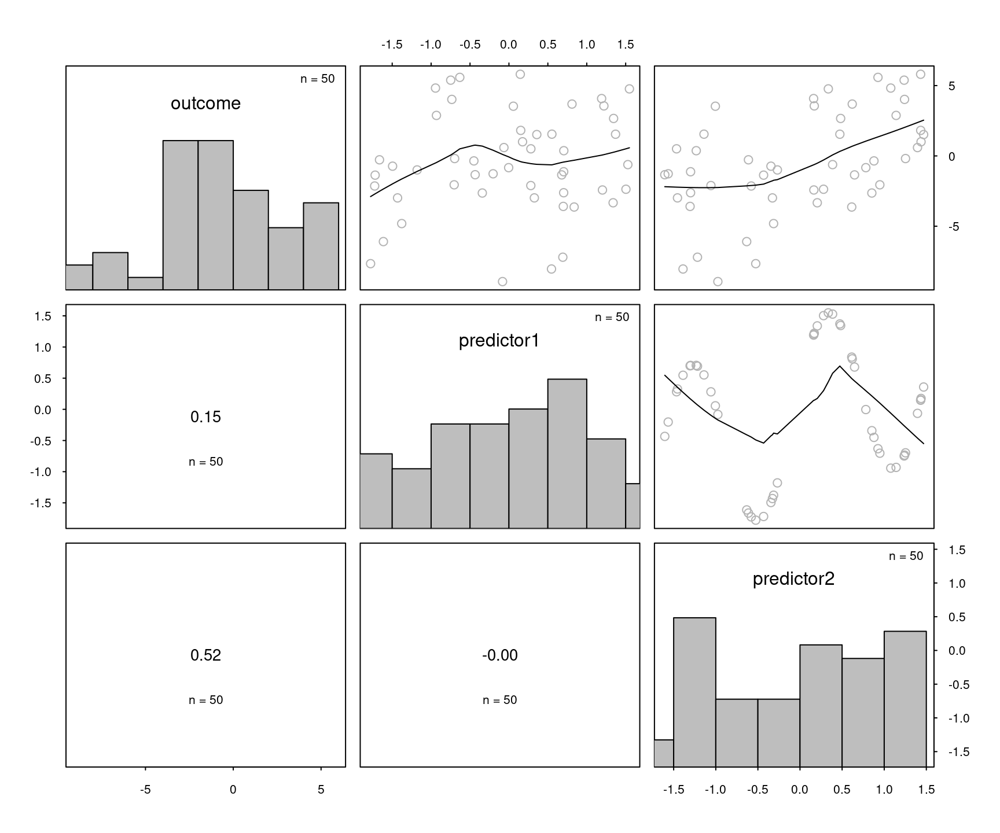
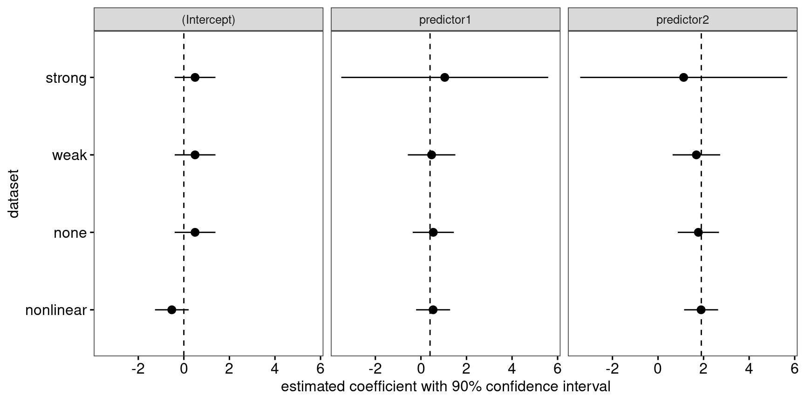
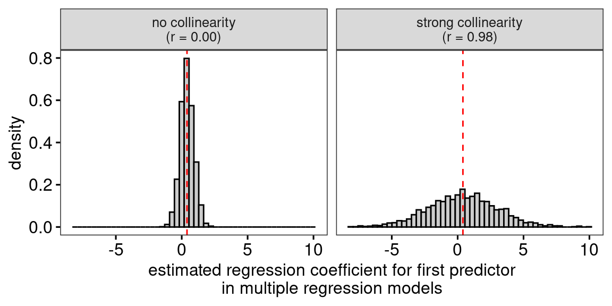
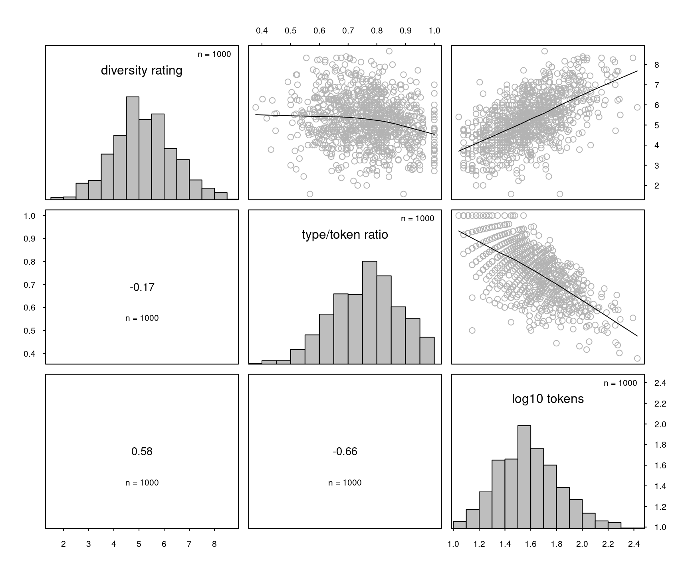
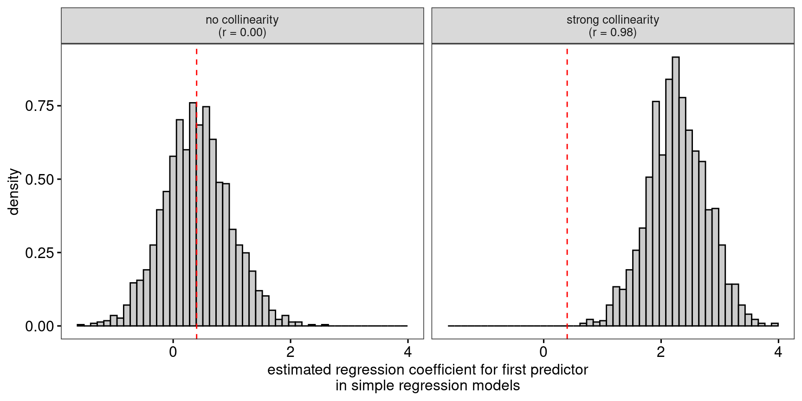
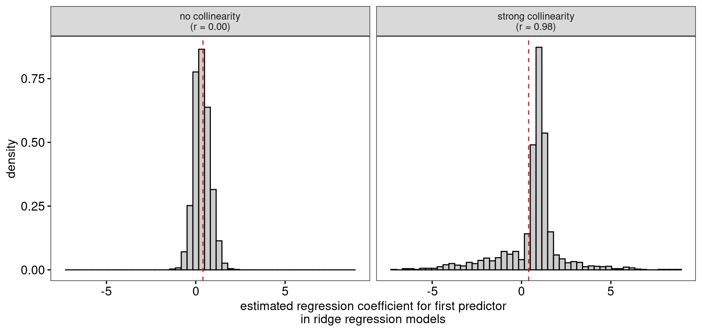

Collinearity isn’t a disease that needs curing
R
multiple regression
assumptions
collinearity
Every now and again, some worried student or collaborator asks me whether they’re “allowed” to fit a regression model in which some of the predictors are fairly strongly correlated with one another. Happily, most Swiss cantons have a laissez-faire policy with regard to fitting models with correlated predictors, so the answer to this question is “yes”. Such an answer doesn’t always set the student or collaborator at ease, so below you find my more elaborate answer.
What’s collinearity?
Collinearity (or ‘multicollinearity’) means that a substantial amount of information contained in some of the predictors included in a statistical model can be pieced together as a linear function of some of the other predictors in the model. That’s a mouthful, so let’s look at some examples.
The easiest case is when you have a multiple regression model with two predictors. These predictors can be continuous or categorical; in what follows, I’ll stick to continuous predictors. I’ve created four datasets with two continuous predictors to illustrate collinearity and its consequences. You find the R code reproduce all analyses at the bottom of this page.
The outcome in each dataset was created using the following equation:
\[\textrm{outcome}_i = 0.4\times\textrm{predictor1}_i + 1.9\times\textrm{predictor2}_i + \varepsilon_i\]
where the residuals (\(\varepsilon_i\)) were drawn from a normal distribution with a standard deviation of 3.5.
\[\varepsilon_i \sim N(0, 3.5^2)\]
The four datasets are presented in Figures 1 through 4. Beginning analysts may be surprised to see that I consider a situation where two predictors are correlated at r = 0.50 to be a case of weak rather than moderate or strong collinearity. But in fact, the consequences of having two predictors correlate at r = 0.50 (rather than at r = 0.00) are negligible. Figure 4 highlights the linear part in collinearity: while the two predictors in this figure are perfectly related, there is no linear relationship between them whatsoever. Datasets such as the one in Figure 4 are not affected by any of the statistical consequences of collinearity, but they’re useful to illustrate a point I want to make below.



predictor1 is a sinusoid transformation of predictor2. In other words, you can predict predictor1 perfectly if you know predictor2.If you fit multiple regressions on these four datasets, you obtain the estimates that are shown in Figure 5 along with their 90% confidence intervals.

What’s the consequence of collinearity?
In essence, collinearity has one statistical consequence: Estimates of regression coefficients that are affected by collinearity vary more from sample to sample than estimates of regression coefficients that aren’t affected by collinearity; see Figure 6 below. As Figure 6 also illustrates, collinearity doesn’t bias the coefficient estimates: On average, the estimated coefficients equal the parameter’s true value both when there is no and very strong collinearity. It’s just that the estimates vary much more around this average when there is strong collinearity.

Crucially, and happily, this greater variability is reflected in the standard errors and confidence intervals around these estimates: The standard errors are automatically wider when the estimated coefficients are affected by collinearity and the confidence intervals retain their nominal coverage rates (i.e., 95% of the 95% confidence intervals will contain the true parameter value). So the statistical consequence of collinearity is automatically taken care of in the model’s output and requires no additional computations on the part of the analyst. This is illustrated in Figure 5 above: The confidence intervals for the two predictors’ estimated coefficients are considerably wider when these are affected by strong collinearity.
The greater variability in the estimates, the larger standard errors, and the wider confidence intervals all reflect a relative lack of information in the sample:
Collinearity is at base a problem about information. If two factors are highly correlated, researchers do not have ready access to much information about conditions of the dependent variables when only one of the factors actually varies and the other does not. If we are faced with this problem, there are really only three fundamental solutions: (1) find or create (e.g. via an experimental design) circumstances where there is reduced collinearity; (2) get more data (i.e. increase the N size), so that there is a greater quantity of information about rare instances where there is some divergence between the collinear variables; or (3) add a variable or variables to the model, with some degree of independence from the other independent variables, that explain(s) more of the variance of Y, so that there is more information about that which is being modeled. (York 2012:1384)
But is collinearity a problem?
For the most part, I think that collinearity is a problem for statistical analyses in the same way that Belgium’s lack of mountains is detrimental to the country’s chances of hosting the Winter Olympics: It’s an unfortunate fact of life, but not something that has to be solved. Running another study, obtaining more data or reducing the error variance are all sensible suggestions, but if you have to work with the data you have, the model output will appropriately reflect the degree of uncertainty in the estimates.
So I don’t consider collinearity a problem. What is the case, however, is that collinearity highlights problems with the way many people think about statistical models and inferential statistics. Let’s look at a couple of these.
‘Collinearity decreases statistical power.’
You may have heared that collinearity decreases statistical power, i.e., the chances of obtaining statistically significant coefficient estimates if their parameter value isn’t zero. This is true, but the lower statistical power is a direct result of the larger standard errors, which appropriately reflect the greater sampling variability of the estimates. This is only a problem if you interpret “lack of statistical significance” as “zero effect”. But then the problem doesn’t lie with collinearity but with the false belief that non-significant estimates correspond to zero effects. It’s just that this false belief is even more likely than usual to lead you astray when your predictors are collinear. If instead of focusing soly on the p-value, you take into account both the estimate and its uncertainty interval, there is no problem.
Incidentally, I think it’s somewhat misleading to say that collinearity decreases statistical power or increases standard errors. It’s true that relative to situations in which there is less or no collinearity and all other things are equal, the standard errors are larger and statistical power is lower when there is stronger collinearity. But I don’t see how you can reduce collinearity but keep all other things equal outside of a computer simulation. In the real world, collinearity isn’t an unfolding process that can be nipped in the bud without bringing about other changes in the research design, the sampling procedure or the statistical model and its interpretation.
‘None of the predictors is significant but the overall model fit is.’
With collinear predictors, you may end up with a statistical model for which the \(F\)-test of overall model fit is highly significant but that doesn’t contain a single significant predictor. This is illustrated in Table 1: The overall model fit for the dataset with strong collinearity (see Figure 1) is highly significant, but as shown in Figure 5, neither predictor has an estimated coefficient that’s significantly different from zero.
| Dataset | R² | p-value of overall fit |
|---|---|---|
| strong | 0.255 | 0.001 |
| weak | 0.220 | 0.003 |
| none | 0.201 | 0.005 |
| nonlinear | 0.293 | 0.000 |
If this seems paradoxical, you need to keep in mind that the tests for the individual coefficient estimates and the test for the overall model fit seek to answer different questions, so there’s no contradiction if they yield different answers. To elaborate, the test for the overall model fit asks if all predictors jointly earn their keep in the model; the tests for the individual coefficients ask whether these are different from zero. With collinear predictors, it’s possible that the answer to the first question is “yes” and the answer to the second is “don’t know”. The reason for this is that with collinear predictors, either predictor could act as the stand-in of the other so that, as far as the model is concerned, either coefficient could well be zero, provided the other isn’t. But due to the lack of information in the collinear sample, it’s not sure which, if any, is zero.
So again, there is no real problem: The tests answer different questions, so they may yield different answers. It’s just that when you have collinear predictors, this tends to happen more often than when you don’t.
‘Collinearity means that you can’t take model coefficients at face value.’
It’s sometimes said that collinearity makes it more difficult to interpret estimated model coefficients. Crucially, the appropriate interpretation of an estimated regression coefficient is always the same, regardless of the degree of collinearity: According to the model, what would the difference in the mean outcome be if you took two large groups of observations that differed by one unit in the focal predictor but whose other predictor values are the same. The interpretational difficulties that become obvious when there is collinearity aren’t caused by the collinearity itself but with mental shortcuts that people take when interpreting regression models.
For instance, you may obtain a coefficient estimate in a multiple regression model that you interpret to mean that older children perform more poorly on an L2 writing task than do younger children. (For the non-linguists: L2 = second or foreign language.) This may be counterintuitive, and you may indeed find that, in fact, in your sample older children actually outperform younger ones. You could chalk this one up to collinearity, but the problem really is related to a faulty mental shortcut you took when interpreting your model: You forgot to take into account the “but whose other predictor values are the same” clause. If your model also included measures of the children’s previous exposure to the L2, their motivation to learn the L2, and their L2 vocabulary knowledge, then what the estimated coefficient means is emphatically not that, according to the model, older children perform on average more poorly on a writing task than younger children. It’s that, according to the model, older children will perform more poorly than younger children with the same values on the previous exposure, motivation, and vocabulary knowledge measures. This is pretty much the whole point of fitting multiple regression models. But if, on reflection, this isn’t what you’re actually interested in, then you should fit a different model. For instance, if you’re interested in the overall difference between younger and older children regardless of their previous exposure, motivation and vocabulary knowledge, don’t include these variables as predictors.
Another interpretational difficulty emerges if you recast the interpretation of the estimate as follows: According to the model, what would the difference in the mean outcome be if you increased the focal predictor by one unit but keep the other predictor values constant. The difference between this interpretation and the one that I offered earlier is that we’ve moved from a purely descriptive one both a causal and an interventionist one (viz., the idea that one could change some predictor values while keeping the others constant and that this would have an effect on the mean outcome). In the face of strong collinearity, it becomes clear that this interventionist interpretation may be wishful thinking: It may be impossible to change values in one predictor without also changing values in the predictors that are collinear with it. But the problem here again isn’t the collinearity but the mental shortcut in the interpretation.
In fact, you can run into the same difficulties when you apply the interventionist mental shortcut in the absence of collinearity: In the dataset shown in Figure 4, it’s impossible to change the second predictor without also changing the first since the first was defined as a function of the second. Yet the two variables aren’t collinear. Another example would be if you wanted to model quality ratings of texts in terms of the number of words in the text (“tokens”), the number of unique words in the text (“types”), and the type/token ratio. The model will output estimated coefficients for the three predictors, but as an analyst you should realise that it’s impossible to find two texts differing in the number of tokens but having both the same number of types and the same type/token ratio: If you change the number of tokens and keep constant the number of types, the type/token ratio changes, too.
A final mental shortcut that is laid bare in the presence of collinearity is conflating a measured variable with the theoretical construct that this variable is assumed to capture. The literature on lexical diversity offers a case in point. The type/token ratio (TTR) discussed in the previous paragraph is one of several possible measures of a text’s lexical diversity. If you take a collection of texts, you’re pretty much guaranteed to find that their type/token ratios are negatively correlated with their lengths. That is, longer texts tend to have lower TTR values. This correlation is known as the “text-length problem” and has led researchers to abandon the use of TTR, even though the relationship isn’t that strong (see Figure 7 for an example).

However, the reason why researchers have abandoned the use of TTR is not collinearity per se. Rather, it is that TTR is a poor measure of what it’s supposed to capture, viz., the lexical diversity displayed in a text. Specifically, because of the statistical properties of language, the TTR is pretty much bound to conflate a text’s lexical diversity with its length. The negative correlation between TTR and text length isn’t much of a problem for statistical modelling; it’s a symptom of a more fundamental problem: A measure of lexical diversity shouldn’t as a matter of fact be related to text length. The fact that TTR does shows that it’s a poor measure of lexical diversity.
To be clear: It’s not necessarily a problem that measures of lexical diversity correlate with text length since it’s possible that the lexical diversity of longer texts is greater than that of shorter texts or vice versa. The problem with TTR is that it necessarily correlates with text length, even if the the texts’ lexical diversity can be assumed to be constant. For instance, if you take increasingly longer snippets of texts from the same book, you’ll find that the TTR goes down, but that doesn’t mean that the writer’s vocabulary skills went down in the process of writing the book. More generally, if your predictors correlate strongly when they’re not supposed to, the problem you have needn’t be collinearity but may instead be that in trying to capture one construct, you’ve also captured the one represented by the other predictor.
In sum, the interpretational challenges encountered when predictors are collinear aren’t caused by the collinearity itself but by mental shortcuts that may lead researchers astray even in the absence of collinearity.
Collinearity doesn’t require a statistical solution
Statistical “solutions,” such as residualization that are often used to address collinearity problems do not, in fact, address the fundamental issue, a limited quantity of information, but rather serve to obfuscate it. It is perhaps obvious to point out, but nonetheless important in light of the widespread confusion on the matter, that no statistical procedure can actually produce more information than exists in the data. (York 2012:1384, my emphasis)
Quite right. Apart from the non-solution that York (2012) mentioned (residualisation), other common statistical “solutions” to collinearity include dropping predictors, averaging collinear predictors, and resorting to different estimation methods such as ridge regression. Since this blog post is long enough as it is, I’ll comment on these only briefly. Further suggested articles are O’Brien (2007) and Wurm and Fisicaro (2014).
- Dropping predictors: I don’t mind this “solution”, but the problem it solves isn’t collinearity but rather that the previous model was misspecified. This is obviously only a solution to the extent that the new model is capable of answering the researchers’ question since, crucially, estimated coefficients from different models don’t have the same meaning (see the previous section). Something to be particularly aware of is that by dropping one of the collinear predictors, you bias the estimates of the other predictors as shown in Figure 8.

Averaging predictors: Again, I don’t mind this solution per se, but please be aware that your model now answers a different question.
Ridge regression and other forms of deliberately biased estimation: Ridge regression and its cousins try to reduce the sample-to-sample variability in the regression estimates by deliberately biasing them. The result is, quite naturally, that you end up with biased estimates: The estimates for the weaker predictor will tend to be biased upwards (see Figure 9), and those for the stronger predictor will be biased downwards. Moreover, the usefulness of standard errors and confidence intervals for ridge regression and the like is contested, see Goeman et al. (2018, p. 18).

tl;dr
- Collinearity is a form of lack of information that is appropriately reflected in the output of your statistical model.
- When collinearity is associated with interpretational difficulties, these difficulties aren’t caused by the collinearity itself. Rather, they reveal that the model was poorly specified (in that it answers a question different to the one of interest), that the analyst overly focuses on significance rather than estimates and the uncertainty about them or that the analyst took a mental shortcut in interpreting the model that could’ve also led them astray in the absence of collinearity.
- If you do decide to “deal with” collinearity, make sure you can still answer the question of interest.
References
Goeman, Jelle, Rosa Meijer and Nimisha Chaturvedi. 2018. L1 and L2 penalized regression models.
O’Brien, Robert M. 2007. A caution regarding rules of thumb of variance inflation factors. Quality & Quantity 41. 673-690.
Vanhove, Jan, Audrey Bonvin, Amelia Lambelet and Raphael Berthele. 2019. Predicting perceptions of the lexical richness of short French, German, and Portuguese texts using text-based indices. Journal of Writing Research 10(3). 499-525.
Wurm, Lee H. and Sebastiano A. Fisicaro. 2014. What residualizing predictors in regression analyses does (and what it does not do). Journal of Memory and Language 72. 37-48.
York, Richard. 2012. Residualization is not the answer: Rethinking how to address multicollinearity. Social Science Research 41. 1379-1386.
R code
This code still ran correctly on August 6, 2023.
# Packages
library(tidyverse)
library(broom)
# Read in the four generated datasets
strong <- read.csv("https://janhove.github.io/datasets/strong_collinearity.csv")
weak <- read.csv("https://janhove.github.io/datasets/weak_collinearity.csv")
none <- read.csv("https://janhove.github.io/datasets/no_collinearity.csv")
nonlinear <- read.csv("https://janhove.github.io/datasets/nonlinearity.csv")
# Load the custom function for drawing scatterplot matrices,
# then drew Figures 1-4
source("https://janhove.github.io/RCode/scatterplot_matrix.R")
scatterplot_matrix(strong[, c(3, 1, 2)])
scatterplot_matrix(weak[, c(3, 1, 2)])
scatterplot_matrix(none[, c(3, 1, 2)])
scatterplot_matrix(nonlinear[, c(3, 1, 2)])
# Fit multiple regression models
strong.lm <- lm(outcome ~ predictor1 + predictor2, data = strong)
weak.lm <- lm(outcome ~ predictor1 + predictor2, data = weak)
none.lm <- lm(outcome ~ predictor1 + predictor2, data = none)
nonlinear.lm <- lm(outcome ~ predictor1 + predictor2, data = nonlinear)
# Extract estimates + 90% CIs
strong_out <- tidy(strong.lm, conf.int = TRUE, conf.level = 0.90) |>
mutate(dataset = "strong")
weak_out <- tidy(weak.lm, conf.int = TRUE, conf.level = 0.90) |>
mutate(dataset = "weak")
none_out <- tidy(none.lm, conf.int = TRUE, conf.level = 0.90) |>
mutate(dataset = "none")
nonlinear_out <- tidy(nonlinear.lm, conf.int = TRUE, conf.level = 0.90) |>
mutate(dataset = "nonlinear")
outputs <- bind_rows(strong_out, weak_out, none_out, nonlinear_out)
# Draw Figure 5
dummy <- data.frame(term = unique(outputs$term), prm = c(0, 0.4, 1.9))
outputs |>
ggplot(aes(x = factor(dataset, levels = c("nonlinear", "none",
"weak", "strong")),
y = estimate,
ymin = conf.low,
ymax = conf.high)) +
geom_pointrange() +
facet_wrap(~ term) +
geom_hline(data = dummy, aes(yintercept = prm),
linetype = "dashed") +
ylab("estimated coefficient with 90% confidence interval") +
xlab("dataset") +
coord_flip()
# Function for simulating effect of collinearity on estimates
collinearity <- function(n_sim = 1000, n_sample = 50,
rho = 0.90,
coefs = c(0.4, 1.9),
sd_error = 3.5) {
# This function generates two correlated
# predictors and an outcome. It then
# runs regression models (including ridge regression)
# on these variables and outputs the estimated
# regression coefficients for the predictors.
# It does this a large number of times (n_sim).
# Package for LASSO/ridge regression
require("glmnet")
estimates <- matrix(ncol = 8, nrow = n_sim)
for (i in 1:n_sim) {
# Generate correlated predictors
predictors <- MASS::mvrnorm(
n = n_sample,
mu = c(0, 0),
Sigma = rbind(
c(1, rho),
c(rho, 1)
)
)
# Generate outcome
outcome <- as.vector(coefs %*% t(predictors) + rnorm(n_sample, sd = sd_error))
# Run multiple regression model
multiple_regression <- lm(outcome ~ predictors[, 1] + predictors[, 2])
# Run single regression models
simple_first <- lm(outcome ~ predictors[, 1])
simple_second <- lm(outcome ~ predictors[, 2])
# Ridge regression
lambda_seq <- 10^seq(2, -2, by = -0.1)
cv_output <- cv.glmnet(predictors, outcome, nfolds = 10,
alpha = 0, lambda = lambda_seq)
best_lambda <- cv_output$lambda.min
ridge_model <- glmnet(predictors, outcome, alpha = 0,
lambda = best_lambda)
# Save regression coefficients
estimated_coefficients <- c(
coef(multiple_regression)[2:3],
summary(multiple_regression)$coefficients[2:3, 2],
coef(simple_first)[2],
coef(simple_second)[2],
coef(ridge_model)[2:3]
)
estimates[i, ] <- estimated_coefficients
}
results <- data.frame(
multiple_est_pred1 = estimates[, 1],
multiple_est_pred2 = estimates[, 2],
multiple_se_pred1 = estimates[, 3],
multiple_se_pred2 = estimates[, 4],
simple_est_pred1 = estimates[, 5],
simple_est_pred2 = estimates[, 6],
ridge_est_pred1 = estimates[, 7],
ridge_est_pred2 = estimates[, 8]
)
results
}
# Simulate effects of strong collinearity
strong_coll <- collinearity(rho = 0.98)
# Simulate effect of perfect orthogonality (zero collinearity)
no_coll <- collinearity(rho = 0)
# Combine
strong_coll$Collinearity <- "strong collinearity\n(r = 0.98)"
no_coll$Collinearity <- "no collinearity\n(r = 0.00)"
all_data <- bind_rows(strong_coll, no_coll)
# Figure 6
ggplot(all_data,
aes(x = multiple_est_pred1,
y = after_stat(density))) +
geom_histogram(bins = 50, colour = "black", fill = "grey80") +
facet_wrap(~ Collinearity) +
geom_vline(xintercept = 0.4, linetype = "dashed", colour = "red") +
xlab("estimated regression coefficient for first predictor\nin multiple regression models")
# Table 1
map_dfr(list(strong.lm, weak.lm, none.lm, nonlinear.lm), glance) |>
mutate(Dataset = c("strong", "weak", "none", "nonlinear")) |>
select(Dataset, `R²` = r.squared, `p-value of overall fit` = p.value) |>
knitr::kable("html") |>
kableExtra::kable_styling(full_width = FALSE)
# Figure 7
lexdiv <- read_csv("https://janhove.github.io/datasets/LexicalDiversityFrench.csv")
ratings <- read_csv("https://janhove.github.io/datasets/meanRatingPerText_French.csv")
ratings$Text <- substr(ratings$Text, 15, nchar(ratings$Text))
d <- left_join(ratings, lexdiv, by = c("Text" = "textName"))
scatterplot_matrix(d |> select(meanRating, TTR, nTokens) |>
mutate(sqrt_nTokens = log10(nTokens)) |>
select(-nTokens),
labels = c("mean diversity rating",
"type/token ratio",
"log10 tokens"))
# Figure 8
ggplot(all_data,
aes(x = simple_est_pred1,
y = after_stat(density))) +
geom_histogram(bins = 50, colour = "black", fill = "grey80") +
facet_wrap(~ Collinearity) +
geom_vline(xintercept = 0.4, linetype = "dashed", col = "red") +
xlab("estimated regression coefficient for first predictor\nin simple regression models")
# Figure 9
ggplot(all_data,
aes(x = ridge_est_pred1,
y = after_stat(density))) +
geom_histogram(bins = 50, colour = "black", fill = "grey80") +
facet_wrap(~ Collinearity) +
geom_vline(xintercept = 0.4, linetype = "dashed", col = "red") +
xlab("estimated regression coefficient for first predictor\nin ridge regression models")Software versions
Please note that I reran the code on this page on August 6, 2023.
devtools::session_info()─ Session info ───────────────────────────────────────────────────────────────
setting value
version R version 4.3.1 (2023-06-16)
os Ubuntu 22.04.2 LTS
system x86_64, linux-gnu
ui X11
language en_US
collate en_US.UTF-8
ctype en_US.UTF-8
tz Europe/Zurich
date 2023-08-06
pandoc 3.1.1 @ /usr/lib/rstudio/resources/app/bin/quarto/bin/tools/ (via rmarkdown)
─ Packages ───────────────────────────────────────────────────────────────────
package * version date (UTC) lib source
backports 1.4.1 2021-12-13 [1] CRAN (R 4.3.0)
bit 4.0.5 2022-11-15 [1] CRAN (R 4.3.0)
bit64 4.0.5 2020-08-30 [1] CRAN (R 4.3.0)
broom * 1.0.5 2023-06-09 [1] CRAN (R 4.3.0)
cachem 1.0.6 2021-08-19 [2] CRAN (R 4.2.0)
callr 3.7.3 2022-11-02 [1] CRAN (R 4.3.1)
cli 3.6.1 2023-03-23 [1] CRAN (R 4.3.0)
colorspace 2.1-0 2023-01-23 [1] CRAN (R 4.3.0)
crayon 1.5.2 2022-09-29 [1] CRAN (R 4.3.1)
devtools 2.4.5 2022-10-11 [1] CRAN (R 4.3.1)
digest 0.6.29 2021-12-01 [2] CRAN (R 4.2.0)
dplyr * 1.1.2 2023-04-20 [1] CRAN (R 4.3.0)
ellipsis 0.3.2 2021-04-29 [2] CRAN (R 4.2.0)
evaluate 0.15 2022-02-18 [2] CRAN (R 4.2.0)
fansi 1.0.4 2023-01-22 [1] CRAN (R 4.3.1)
farver 2.1.1 2022-07-06 [1] CRAN (R 4.3.0)
fastmap 1.1.0 2021-01-25 [2] CRAN (R 4.2.0)
forcats * 1.0.0 2023-01-29 [1] CRAN (R 4.3.0)
fs 1.5.2 2021-12-08 [2] CRAN (R 4.2.0)
generics 0.1.3 2022-07-05 [1] CRAN (R 4.3.0)
ggplot2 * 3.4.2 2023-04-03 [1] CRAN (R 4.3.0)
glue 1.6.2 2022-02-24 [2] CRAN (R 4.2.0)
gtable 0.3.3 2023-03-21 [1] CRAN (R 4.3.0)
highr 0.9 2021-04-16 [2] CRAN (R 4.2.0)
hms 1.1.3 2023-03-21 [1] CRAN (R 4.3.0)
htmltools 0.5.5 2023-03-23 [1] CRAN (R 4.3.0)
htmlwidgets 1.6.2 2023-03-17 [1] CRAN (R 4.3.1)
httpuv 1.6.11 2023-05-11 [1] CRAN (R 4.3.1)
httr 1.4.6 2023-05-08 [1] CRAN (R 4.3.0)
jsonlite 1.8.7 2023-06-29 [1] CRAN (R 4.3.1)
kableExtra 1.3.4 2021-02-20 [1] CRAN (R 4.3.1)
knitr 1.39 2022-04-26 [2] CRAN (R 4.2.0)
labeling 0.4.2 2020-10-20 [1] CRAN (R 4.3.0)
later 1.3.1 2023-05-02 [1] CRAN (R 4.3.1)
lifecycle 1.0.3 2022-10-07 [1] CRAN (R 4.3.0)
lubridate * 1.9.2 2023-02-10 [1] CRAN (R 4.3.0)
magrittr 2.0.3 2022-03-30 [1] CRAN (R 4.3.0)
memoise 2.0.1 2021-11-26 [2] CRAN (R 4.2.0)
mime 0.10 2021-02-13 [2] CRAN (R 4.0.2)
miniUI 0.1.1.1 2018-05-18 [1] CRAN (R 4.3.1)
munsell 0.5.0 2018-06-12 [1] CRAN (R 4.3.0)
pillar 1.9.0 2023-03-22 [1] CRAN (R 4.3.0)
pkgbuild 1.4.2 2023-06-26 [1] CRAN (R 4.3.1)
pkgconfig 2.0.3 2019-09-22 [2] CRAN (R 4.2.0)
pkgload 1.3.2.1 2023-07-08 [1] CRAN (R 4.3.1)
prettyunits 1.1.1 2020-01-24 [2] CRAN (R 4.2.0)
processx 3.8.2 2023-06-30 [1] CRAN (R 4.3.1)
profvis 0.3.8 2023-05-02 [1] CRAN (R 4.3.1)
promises 1.2.0.1 2021-02-11 [1] CRAN (R 4.3.1)
ps 1.7.5 2023-04-18 [1] CRAN (R 4.3.1)
purrr * 1.0.1 2023-01-10 [1] CRAN (R 4.3.0)
R6 2.5.1 2021-08-19 [2] CRAN (R 4.2.0)
Rcpp 1.0.11 2023-07-06 [1] CRAN (R 4.3.1)
readr * 2.1.4 2023-02-10 [1] CRAN (R 4.3.0)
remotes 2.4.2 2021-11-30 [2] CRAN (R 4.2.0)
rlang 1.1.1 2023-04-28 [1] CRAN (R 4.3.0)
rmarkdown 2.21 2023-03-26 [1] CRAN (R 4.3.0)
rstudioapi 0.14 2022-08-22 [1] CRAN (R 4.3.0)
rvest 1.0.3 2022-08-19 [1] CRAN (R 4.3.0)
scales 1.2.1 2022-08-20 [1] CRAN (R 4.3.0)
sessioninfo 1.2.2 2021-12-06 [2] CRAN (R 4.2.0)
shiny 1.7.4.1 2023-07-06 [1] CRAN (R 4.3.1)
stringi 1.7.12 2023-01-11 [1] CRAN (R 4.3.1)
stringr * 1.5.0 2022-12-02 [1] CRAN (R 4.3.0)
svglite 2.1.1 2023-01-10 [1] CRAN (R 4.3.1)
systemfonts 1.0.4 2022-02-11 [1] CRAN (R 4.3.0)
tibble * 3.2.1 2023-03-20 [1] CRAN (R 4.3.0)
tidyr * 1.3.0 2023-01-24 [1] CRAN (R 4.3.0)
tidyselect 1.2.0 2022-10-10 [1] CRAN (R 4.3.0)
tidyverse * 2.0.0 2023-02-22 [1] CRAN (R 4.3.1)
timechange 0.2.0 2023-01-11 [1] CRAN (R 4.3.0)
tzdb 0.4.0 2023-05-12 [1] CRAN (R 4.3.0)
urlchecker 1.0.1 2021-11-30 [1] CRAN (R 4.3.1)
usethis 2.2.2 2023-07-06 [1] CRAN (R 4.3.1)
utf8 1.2.3 2023-01-31 [1] CRAN (R 4.3.1)
vctrs 0.6.3 2023-06-14 [1] CRAN (R 4.3.0)
viridisLite 0.4.2 2023-05-02 [1] CRAN (R 4.3.0)
vroom 1.6.3 2023-04-28 [1] CRAN (R 4.3.0)
webshot 0.5.5 2023-06-26 [1] CRAN (R 4.3.1)
withr 2.5.0 2022-03-03 [2] CRAN (R 4.2.0)
xfun 0.39 2023-04-20 [1] CRAN (R 4.3.0)
xml2 1.3.3 2021-11-30 [2] CRAN (R 4.2.0)
xtable 1.8-4 2019-04-21 [1] CRAN (R 4.3.1)
yaml 2.3.5 2022-02-21 [2] CRAN (R 4.2.0)
[1] /home/jan/R/x86_64-pc-linux-gnu-library/4.3
[2] /usr/local/lib/R/site-library
[3] /usr/lib/R/site-library
[4] /usr/lib/R/library
──────────────────────────────────────────────────────────────────────────────